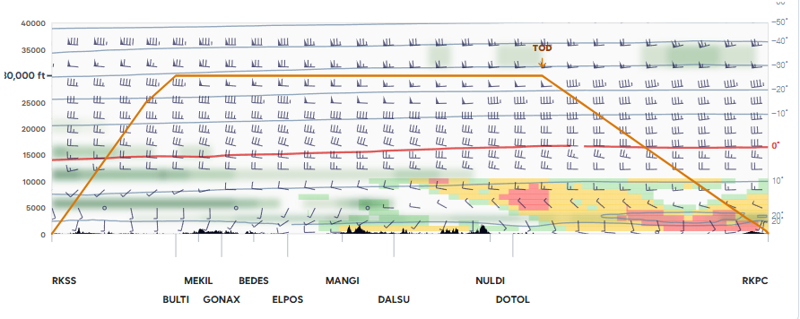

비행 전 브리핑
RKSS → RKPC
교체 RKPU · ETD 09:00Z → ETA 11:40Z
Go/No-go 상태(데모):
① 위험 요약4건 · 심각도순
조우
뇌우 TS · 8,000–14,000 ft
SIGMET · 출발 후 32–68 NM · 07-02 09:00~12:00 UTC
조우
난류 TURB · 밴드 미상
SIGMET · 45–70 NM · 10:00~13:00 UTC
도착
윈드시어 경보 WS RWY 33
공항경보 · RKPC 도착 · 08:30~10:00 UTC
주변
착빙 ICE · 6,000–10,000 ft
AIRMET · 12–40 NM · 08:00~14:00 UTC
지도에서 위험 레이어 보기
② 현재 실황
| 공항 | 범주 | 바람 | 시정 | 운고 | 기온/이슬점 | QNH | |
|---|---|---|---|---|---|---|---|
| 출발 RKSS 08:12Z | VFR | 270/12kt | ≥10km | SCT030 | 18/9℃ | 1013 | · |
| 도착 RKPC 08:30Z SPECI | IFR | 180/18kt G28 측풍 L17kt | 3.2km | OVC008 | 15/13℃ | 1009 | ▾ |
|
AMOS 지상실황08:42Z
사용 활주로25 IN USE
10분 평균풍180°/16kt
정풍 H/TH 05kt
측풍 L/RL 15kt
RVR RWY251600m
운고·기온/이슬점800ft · 15/13℃
RKPC 020830Z 18018G28KT 3200 BR OVC008 15/13 Q1009=
| |||||||
| 교체 RKPU 08:00Z | VFR | 320/08kt | ≥10km | SCT040 | 17/8℃ | 1012 | · |
③ 일기도
06Z09Z · ETD12Z15Z18Z
한랭전선 서해상~남해상 · 저기압 남해상 996hPa
지도에서 전선·기압 보기
④ 노선·공역계획고도 30,000ft · TOD DOTOL 12.9NM 후
계획고도 조우 위험 없음 (SIGMET/AIRMET)
중(MOD) 심(SEV)
난류
심 295–313NM
착빙없음
기온습도착빙바람난류SIGMET/AIRMET

단면도 크게 열기
상층바람·기온 원자료 (격자·층별)▾
| 고도 | RKSS | BULTI | MANGI | DOTOL | RKPC |
|---|---|---|---|---|---|
| FL340 | 270/54 −52 | 266/52 −51 | 258/48 −51 | 252/45 −50 | 250/44 −50 |
| FL300 | 268/48 −44 | 264/47 −44 | 256/43 −43 | 250/41 −42 | 248/40 −41 |
| FL240 | 262/40 −32 | 258/38 −31 | 250/34 −31 | 244/31 −30 | 242/30 −30 |
| FL180 | 255/30 −18 | 250/28 −18 | 242/25 −17 | 236/22 −16 | 234/21 −16 |
| FL100 | 240/20 −4 | 236/19 −4 | 228/16 −3 | 222/14 −3 | 220/13 −2 |
실제 비행경로 고도(연직 프로파일) · KIM NWP · 유효 09:00Z
⑤ 목적지 예보
IFRRKPC도착 · ETA 11:40Z · TEMPO
▼ ETA
06Z12Z18Z00Z06Z12Z
VFR IFR LIFRTEMPO 포함(최악 기준)
| 범주 | 기간(Z) | 바람 | 시정 | 운고 | 현상 |
|---|---|---|---|---|---|
| VFR | 06/06–06/14 base | 070/08kt | ≥10km | SCT030 | — |
| IFR | 06/08–06/12 TEMPO ◀ETA | 070/08kt | 3.2km | BKN008 | −RA |
| IFR | 06/14–03/12 BECMG | 240/12kt | 6.0km | BKN015 | — |
원문 TAF (재구성)▾
TAF RKPC 020500Z 0206/0312 07008KT 9999 SCT030
TEMPO 0208/0212 3200 −RA BKN008
BECMG 0214/0216 24012KT 6000 BKN015=
⚠ 교체공항 필요ETA±1h 운고<2000ft 또는 시정<5000m
VFRRKPU교체 · ETA 12:10Z
▼ ETA
320/08kt · ≥10km · SCT040 · 종일 VFR